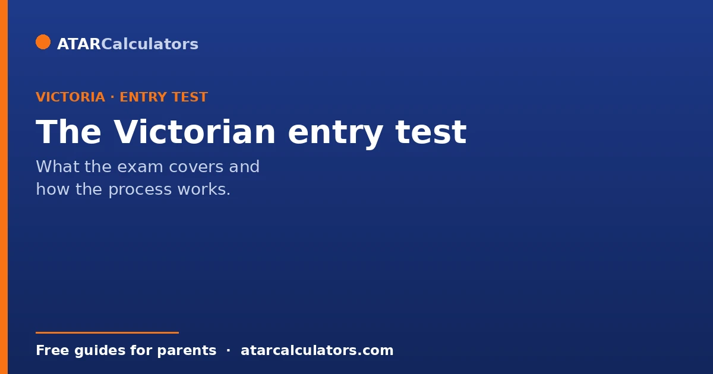
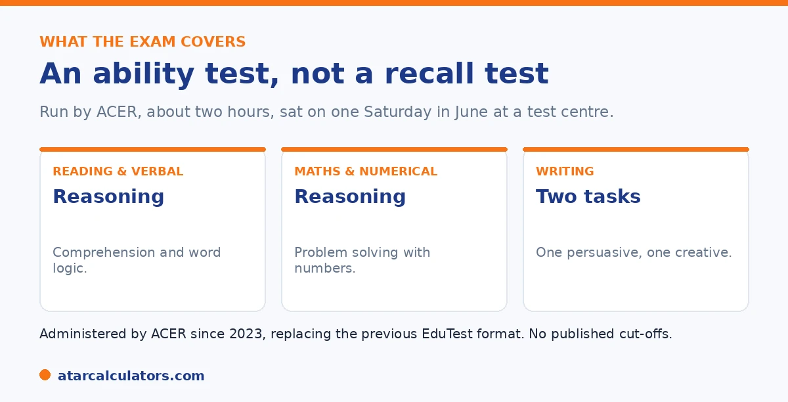

Here is the short version. The Victorian selective entry test is a centralised exam. It is run by ACER, the Australian Council for Educational Research, which took over from EduTest in 2023. Students sit it in Year 8, on a single Saturday in June, for entry into Year 9 at one of the four selective schools. It tests reading and verbal reasoning, mathematics and numerical reasoning, and writing. It measures ability, not curriculum recall, and entry is by competitive ranking.
If you are looking into Victorian selective entry, the test itself raises a lot of questions. Who runs it? What does it cover? When does it happen? Here are clear answers.
Below is how the exam and process work. To estimate a result, use our Victorian selective calculator.
Key takeaways
- The exam is run by ACER, which took over from EduTest in 2023.
- Students sit it in Year 8, for entry in Year 9.
- It is held on a single Saturday, usually in June.
- It tests reading and verbal reasoning, maths and numerical reasoning, and writing.
- It measures ability, not curriculum recall.
- Entry is by competitive ranking, with no published cut-offs.
Who runs the test
The exam is run by ACER, the Australian Council for Educational Research, for the Victorian Department of Education. ACER took over from EduTest in 2023. So the test changed in style, not just in who runs it.

ACER designs the test to measure ability and thinking. It rewards real reasoning, not memorised facts. The content does not go beyond Year 8 level.
What the test covers
The exam has several timed sections. They cover reading and verbal reasoning, maths and numerical reasoning, and writing, with one persuasive task and one creative task.
The reasoning sections test how a child thinks, not just what they know. A child who is good at sums but weak at problem solving can find this part hard. Writing is marked on ideas, structure, and use of language.
When and where it happens
Students sit the exam in Year 8, for entry into Year 9 the next year. It is held on one Saturday, usually in June, at test centres across Victoria. It runs about two hours plus breaks.
Applications usually open in early March and close in late April. The Department confirms exact dates in late February, so check the official site for the current year.
Want to estimate a result from practice scores?
Try the Victorian selective calculator →How students are selected
Entry is by competitive ranking. Students rank all four schools in order. They are placed at the highest one where their result is strong enough. There is no published pass mark.
Most places go on exam results. There is also an equity category for some students, and the schools fill a small share at their own discretion. For how the schools compare, see our Victorian selective schools guide.
The ranked-preference system is worth understanding, because it shapes how you should list the schools. You sit one exam. Your single result is then used to place you at the highest-preference school where your score is competitive. So listing the schools in your genuine order of preference is the right strategy. There is no penalty for putting the most competitive school first. If you miss it, you are simply considered for your next choice, with the same result.
What you should not do is leave a school off your list because you assume you will not get in. That only removes a chance you might have had. The equity category exists so students who have faced disadvantage are considered fairly against the same standard. A small number of discretionary places also let schools account for individual circumstances. But the large majority of offers come straight from the exam ranking. Because there is no published pass mark, and the cohort changes each year, the sensible approach is simple. Prepare well, and sit the one exam. Then preference all the schools you would genuinely attend in true order, so your result is used to its fullest.
Results and offers
Results come out later in the year, usually in late August. First-round offers follow in early September. Successful students start Year 9 the next January.
Because entry is a ranking, a near miss is common and not a failure. Many strong students apply, and only a limited number of places exist. For preparation, see our preparation guide.
The exam format
The Victorian selective entrance exam is sat on a single day, with several timed sections covering reading, mathematics, reasoning and writing. Each section has its own time limit.
So your child works through a sequence of sections in one sitting. Being comfortable managing time within each section, and moving on when it ends, helps a great deal.
The writing tasks
The exam includes writing, so your child needs to plan and produce a piece within a set time. Writing is judged on ideas, structure and expression, not just correct spelling.
So practise planning quickly and writing to a prompt. A short routine of read, plan, write builds the habit that the timed conditions reward.
Verbal and numerical reasoning
The reasoning sections test problem-solving rather than curriculum content. They ask your child to work with patterns, words and numbers in unfamiliar ways, so knowing the school syllabus is not enough on its own.
So reasoning improves with varied practice and exposure to different puzzle types. This builds flexible thinking, which is what these sections are really measuring.
Preparing sensibly
Sensible preparation combines familiarity with the format and steady work on the underlying skills. Wide reading, some mathematics practice, and a few timed attempts cover most of what helps.
So there is no need for heavy drilling. A student who reads widely, practises reasoning a little, and knows the format walks in well prepared.
When the exam is held
The entrance exam is sat in Year 8, in a set testing period, for a Year 9 start. Families register in advance, and late registrations are generally not accepted.
So Year 8 is the year that counts. Knowing the timing early lets you prepare steadily through the year, rather than scrambling close to the exam date.
The sections in brief
The exam covers several areas: reading comprehension, mathematics, verbal and numerical reasoning, and writing. Each is timed, and together they build the result that decides offers.
So preparation spans comprehension, mathematical problem-solving, reasoning and writing. A student strong across all of these, rather than in just one, is best placed in a single-sitting exam like this.
No published cut-off to aim at
Offers depend on exam performance and the preferences you list, but no cut-off score is published for any of the schools. A number from a forum is a guess, not an official target.
So plan on doing as well as possible and choosing preferences wisely, rather than aiming at a specific figure. There simply is not an official one to aim at.
Managing time in the exam
Each section of the exam is timed separately, so your child cannot carry spare time from one section into another. Managing the clock within each section is part of doing well.
So practise pacing: attempt what they can, and move on rather than getting stuck on one hard question. Leaving nothing blank, and not over-spending early, protects the result across a long, single-sitting exam.
It tests skills, not just curriculum
Much of the exam tests thinking, not only taught content. The reading, reasoning and writing sections ask your child to comprehend, solve problems and express ideas, which go beyond memorising the school syllabus.
So knowing the curriculum is not enough on its own. Broad reading, varied problem-solving and practice at writing to a prompt build the flexible skills the exam is really measuring across its sections.
Common questions
How does the Victorian selective entry test work?
It is a centralised exam run by ACER, sat in Year 8 for Year 9 entry. It tests reading and verbal reasoning, maths and numerical reasoning, and writing, and entry is by competitive ranking across the four selective schools.
What does the Victorian selective test assess?
It assesses ability and higher-order thinking, not curriculum recall. The sections cover reading and verbal reasoning, mathematics and numerical reasoning, and writing, with a persuasive and a creative task. Content does not go beyond Year 8 level.
When do students apply for the Victorian selective exam?
Applications typically open in early March and close in late April, for an exam in June. Students sit it in Year 8 for entry into Year 9 the following year. Confirm exact dates with the Department.
Who administers the Victorian selective test?
ACER, the Australian Council for Educational Research, administers it on behalf of the Victorian Department of Education. ACER took over from EduTest in 2023, so older descriptions of an EduTest format are out of date.
How are applicants ranked and placed?
Students rank all four schools in preference order. They are placed at the highest-ranked school where their result is competitive. Most places go on exam results, with an equity category and a small discretionary share.
When are Victorian selective results released?
Results are usually released in late August, with first-round offers in early September. Successful students begin Year 9 the following January at their allocated school.
Estimate a Victorian selective result
Enter practice section results for a rough competitiveness guide. Free, and no signup.
Open the Victorian selective calculator →Related guides
This guide is general information for parents, not formal advice. The Victorian Department of Education and ACER set the rules, and details like dates and the selection categories can change. There are no published cut-off scores, so always confirm current details on the official Victorian selective entry pages. Reviewed by the ATARCalculators Editorial Team.